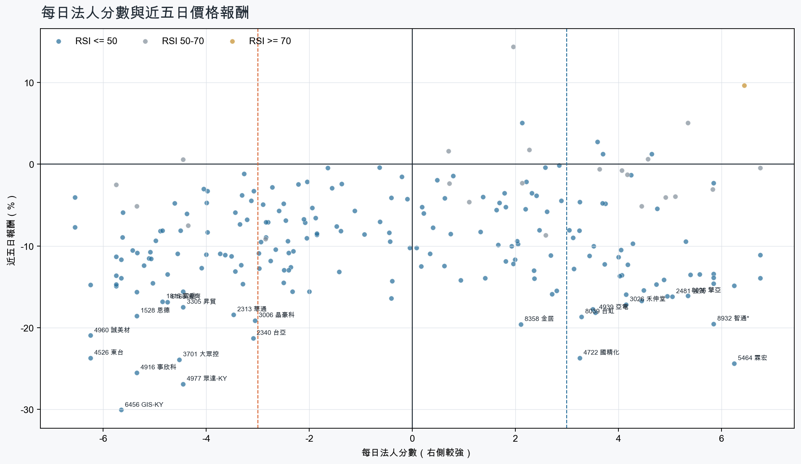
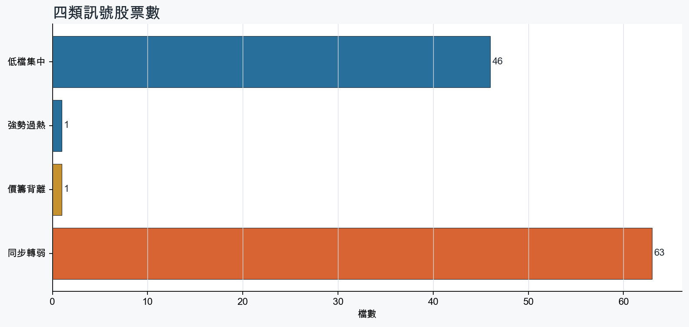
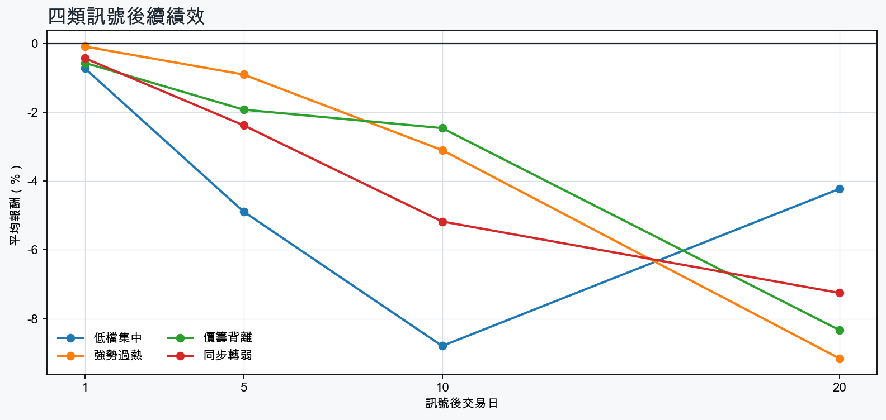

市場情緒偏空
近5日法人合計-9,483,734 張
篩選池上漲比例5.0%
籌碼好 / RSI低15 檔
籌碼差 / 價跌15 檔



EPS × PE VALUATION
法人常用的相對估值
顯示保守、基準與樂觀估值帶，不把單一數字包裝成精準目標價。
最新累計 EPS 依季數年化 × 同產業有效 P/E 的 Q25／中位數／Q75。排除本公司、非正 P/E，並以 1.5×IQR 排除離群值。估值帶是公開資料篩選值，不是法人目標價；未使用分析師預估 EPS。
MOOD × MONEY
情緒與籌碼雷達
熱度代表被討論程度；情緒分與法人方向分開計算。熱門不等於適合追價，樣本不足也不硬判多空。
| 股票 | 情緒 | 討論熱度 | 情緒 × 籌碼 | 情緒 × 基本面 |
|---|---|---|---|---|
| 1815 富喬同步轉弱 | 情緒低迷 -39.6信心 63 | 1001 篇 / 21 留言 / 3 則新聞 | 情籌雙弱法人分 -4.8 | 基本面佳、情緒悲觀基本面分 +3.6 |
| 6456 GIS-KY同步轉弱 | 中性分歧 +0.0信心 30 | 640 篇 / 0 留言 / 3 則新聞 | 情籌混合法人分 -5.7 | 基本面與情緒分歧基本面分 -1.5 |
| 4977 眾達-KY同步轉弱 | 偏空 -29.7信心 30 | 640 篇 / 0 留言 / 3 則新聞 | 情籌雙弱法人分 -4.5 | 基本面佳、情緒悲觀基本面分 +3.6 |
| 4916 事欣科同步轉弱 | 偏空 -29.7信心 30 | 640 篇 / 0 留言 / 3 則新聞 | 情籌雙弱法人分 -5.3 | 基本面佳、情緒悲觀基本面分 +3.6 |
| 4960 誠美材同步轉弱 | 偏空 -29.7信心 30 | 640 篇 / 0 留言 / 3 則新聞 | 情籌雙弱法人分 -6.2 | 基本面與情緒雙弱基本面分 -3.8 |
| 6209 今國光同步轉弱 | 偏多 +29.7信心 30 | 640 篇 / 0 留言 / 3 則新聞 | 熱門但法人撤退法人分 -5.3 | 基本面與情緒共振基本面分 +3.6 |
| 3006 晶豪科同步轉弱 | 中性分歧 +0.0信心 30 | 640 篇 / 0 留言 / 3 則新聞 | 情籌混合法人分 -3.0 | 基本面與情緒分歧基本面分 +3.6 |
| 2313 華通同步轉弱 | 偏空 -29.7信心 30 | 640 篇 / 0 留言 / 3 則新聞 | 情籌雙弱法人分 -3.5 | 基本面佳、情緒悲觀基本面分 +3.6 |
| 6278 台表科同步轉弱 | 偏多 +29.7信心 30 | 640 篇 / 0 留言 / 3 則新聞 | 熱門但法人撤退法人分 -5.8 | 基本面與情緒共振基本面分 +2.4 |
| 5243 乙盛-KY同步轉弱 | 偏多 +29.7信心 30 | 640 篇 / 0 留言 / 3 則新聞 | 熱門但法人撤退法人分 -6.2 | 基本面與情緒共振基本面分 +3.6 |
| 3305 昇貿同步轉弱 | 中性分歧 +0.0信心 30 | 640 篇 / 0 留言 / 3 則新聞 | 情籌混合法人分 -4.5 | 基本面與情緒分歧基本面分 +3.6 |
| 6199 天品價籌背離 | 中性分歧 +0.0信心 30 | 640 篇 / 0 留言 / 3 則新聞 | 情籌混合法人分 -4.5 | 基本面與情緒分歧基本面分 +3.6 |
01
籌碼好 / RSI低
優先研究基本面；法人續買且價格止穩時，才適合分批觀察。
| 股票 / 確認狀態 | 每日法人分 | 浦男式近似 | 法人加速度 | RSI / 相對強弱 | 量價確認 | 融資融券 | 每週集保確認 | 基本面 | EPS × 同業 P/E 估值 | 情緒 / 情籌 | 近期消息 | 論壇討論 |
|---|---|---|---|---|---|---|---|---|---|---|---|---|
| 9945 潤泰新等待確認 · 81 分籌碼有訊號，但價格尚未確認 | +3.8法人 +7,097 張 / 5 天 | 接近 · 76法人籌碼偏多；法人買盤加速；買超具延續性；留意未站月線、中期均線未翻多 | +330 張近3日 +3,756 / 連續 +6 日 | 39.8相對大盤 +8.1% | 量比 1.26確認分 +1.1收盤跌破20日線；20日線低於60日線 | -%融資 - 張 / 融券 - 張 | +0.23 pp1000張 +0.24 pp | 單月營收年增 +47.7%；累計營收年增 +30.9%；2026 Q3 累計 EPS 5.14仍需觀察下一期財報延續性來源：公開資訊觀測站 | 基準 NT$ 78.54估值帶 67.78–119.2現價 25.80 · 低於估值帶 · 距基準 +204.4%2026 Q3 累計 EPS 5.14 → 年化 6.85其他同業 P/E 9.89／11.46／17.39 · n=65 · 信心較高以 Q3 累計 EPS 年化，不等同分析師全年預估來源：TWSE／TPEx 每日本益比 | 樣本不足 +0.0熱度 0 / 信心 0情緒樣本不足 | 近期沒有通過股票語境篩選的新聞 | 近期沒有明確提及本股的論壇樣本 |
| 2542 興富發等待確認 · 79 分籌碼有訊號，但價格尚未確認 | +4.2法人 +8,098 張 / 5 天 | 接近 · 71法人籌碼偏多；法人買盤加速；買超具延續性；留意未站月線、中期均線未翻多 | +378 張近3日 +4,277 / 連續 +10 日 | 42.8相對大盤 +14.7% | 量比 0.81確認分 +0.5收盤跌破20日線；20日線低於60日線 | -%融資 - 張 / 融券 - 張 | +0.07 pp1000張 +0.06 pp | 單月營收年增 +31.7%；累計營收年增 +185.5%；2026 Q3 累計 EPS 3.83仍需觀察下一期財報延續性來源：公開資訊觀測站 | 基準 NT$ 42.49估值帶 30.59–65.31現價 37.25 · 估值帶內 · 距基準 +14.1%2026 Q3 累計 EPS 3.83 → 年化 5.11建材營造同業 P/E 5.99／8.32／12.79 · n=65 · 信心較高以 Q3 累計 EPS 年化，不等同分析師全年預估來源：TWSE／TPEx 每日本益比 | 樣本不足 +0.0熱度 0 / 信心 0情緒樣本不足 | 近期沒有通過股票語境篩選的新聞 | 近期沒有明確提及本股的論壇樣本 |
| 2481 強茂等待確認 · 76 分籌碼有訊號，但價格尚未確認 | +5.0法人 +5,054 張 / 4 天 | 未命中 · 55法人籌碼偏多；法人買盤加速；買超具延續性；留意未站月線、中期均線未翻多 | +3,454 張近3日 +4,531 / 連續 +1 日 | 34.7相對大盤 -24.6% | 量比 0.90確認分 -1.0收盤跌破20日線；20日線低於60日線；近20日弱於大盤 | -%融資 - 張 / 融券 - 張 | +0.41 pp1000張 +1.06 pp | 單月營收年增 +33.2%；累計營收年增 +21.6%；2026 Q3 累計 EPS 3.73仍需觀察下一期財報延續性來源：公開資訊觀測站 | 基準 NT$ 85.54估值帶 59.18–133.7現價 88.00 · 估值帶內 · 距基準 -2.8%2026 Q3 累計 EPS 3.73 → 年化 4.97半導體同業 P/E 11.90／17.20／26.89 · n=155 · 信心較高以 Q3 累計 EPS 年化，不等同分析師全年預估來源：TWSE／TPEx 每日本益比 | 偏空 -19.8熱度 54 / 信心 20情籌混合 | 功率半導體倒一片！嘉晶打入跌停、強茂、富鼎重挫8% 「這檔」漲停打開仍漲2.47%撐盤Yahoo股市 · 11/25【11:54 即時新聞】強茂(2481)亮燈漲停，AI功率半導體轉單成盤中焦點CMoney投資網誌 · 11/24 | 近期沒有明確提及本股的論壇樣本 |
| 5871 中租-KY等待確認 · 84 分籌碼有訊號，但價格尚未確認 | +3.6法人 +11,070 張 / 4 天 | 接近 · 76法人籌碼偏多；法人買盤加速；買超具延續性；留意未站月線、中期均線未翻多 | +13,535 張近3日 +12,502 / 連續 +3 日 | 46.5相對大盤 +13.7% | 量比 2.36確認分 +3.0收盤跌破20日線；20日線低於60日線 | -%融資 - 張 / 融券 - 張 | -0.15 pp1000張 +0.26 pp | 單月營收年增 +3.6%；2026 Q3 累計 EPS 8.73；2026 Q3 累計營益率 30.5%累計營收年增 -0.0%來源：公開資訊觀測站 | 基準 NT$ 133.4估值帶 115.1–202.4現價 102.0 · 低於估值帶 · 距基準 +30.8%2026 Q3 累計 EPS 8.73 → 年化 11.64其他同業 P/E 9.89／11.46／17.39 · n=65 · 信心較高以 Q3 累計 EPS 年化，不等同分析師全年預估來源：TWSE／TPEx 每日本益比 | 中性分歧 +0.0熱度 64 / 信心 30情籌混合 | 5871 中租-KY - 我的好兄弟連6買，還買了12800張 全靠我一張臉 看看賠光... - 股市爆料同學會CMoney · 11/255871 中租-KY - 難怪這邊唱空的永遠是沒錢人 說跌了再買 跌了也是不敢買 - 股市爆料同學會CMoney · 11/25 | 近期沒有明確提及本股的論壇樣本 |
| 8299 群聯等待確認 · 66 分籌碼有訊號，但價格尚未確認 | +5.8法人 +2,725 張 / 4 天 | 接近 · 58法人籌碼偏多；買超具延續性；量價健康；留意未站月線、中期均線未翻多 | -139 張近3日 +1,036 / 連續 +1 日 | 46.7相對大盤 -8.4% | 量比 1.93確認分 -3.8收盤跌破20日線；20日線低於60日線；近20日弱於大盤；法人買盤減速 | +0.4%融資 +27 張 / 融券 +2 張 | +0.28 pp1000張 +1.89 pp | 單月營收年增 +346.3%；累計營收年增 +297.8%；2026 Q3 累計 EPS 325.49仍需觀察下一期財報延續性來源：公開資訊觀測站 | 基準 NT$ 7,603估值帶 5,286–11,670現價 1,485 · 低於估值帶 · 距基準 +412.0%2026 Q3 累計 EPS 325.5 → 年化 434.0半導體同業 P/E 12.18／17.52／26.89 · n=155 · 信心較高以 Q3 累計 EPS 年化，不等同分析師全年預估來源：TWSE／TPEx 每日本益比 | 偏多 +29.7熱度 64 / 信心 30情籌共振 | 群聯砸32.96億元買回庫藏股 提前逾一個月完成、執行率100%經濟日報 · 11/25群聯續推進企業級SSD布局 新一代X3明年H1量產台視全球資訊網 · 11/25 | 近期沒有明確提及本股的論壇樣本 |
| 2351 順德等待確認 · 75 分籌碼有訊號，但價格尚未確認 | +6.8法人 +3,247 張 / 5 天 | 未命中 · 55法人籌碼偏多；法人買盤加速；買超具延續性；留意未站月線、中期均線未翻多 | +292 張近3日 +1,733 / 連續 +5 日 | 33.9相對大盤 -27.2% | 量比 1.07確認分 -1.2收盤跌破20日線；20日線低於60日線；近20日弱於大盤 | -%融資 - 張 / 融券 - 張 | -2.19 pp1000張 -3.22 pp | 單月營收年增 +80.9%；累計營收年增 +39.6%；2026 Q3 累計 EPS 4.80仍需觀察下一期財報延續性來源：公開資訊觀測站 | 基準 NT$ 110.1估值帶 76.16–172.1現價 111.0 · 估值帶內 · 距基準 -0.8%2026 Q3 累計 EPS 4.80 → 年化 6.40半導體同業 P/E 11.90／17.20／26.89 · n=155 · 信心較高以 Q3 累計 EPS 年化，不等同分析師全年預估來源：TWSE／TPEx 每日本益比 | 樣本不足 +0.0熱度 0 / 信心 0情緒樣本不足 | 近期沒有通過股票語境篩選的新聞 | 近期沒有明確提及本股的論壇樣本 |
| 2493 揚博等待確認 · 73 分籌碼有訊號，但價格尚未確認 | +5.8法人 +2,377 張 / 4 天 | 接近 · 61法人籌碼偏多；法人買盤加速；買超具延續性；留意未站月線、中期均線未翻多 | +937 張近3日 +1,714 / 連續 +1 日 | 41.1相對大盤 -18.4% | 量比 1.21確認分 -1.0收盤跌破20日線；20日線低於60日線；近20日弱於大盤 | -%融資 - 張 / 融券 - 張 | -1.78 pp1000張 -2.62 pp | 單月營收年增 +49.1%；累計營收年增 +20.4%；2026 Q3 累計 EPS 4.45仍需觀察下一期財報延續性來源：公開資訊觀測站 | 基準 NT$ 106.2估值帶 73.57–154.2現價 120.0 · 估值帶內 · 距基準 -11.5%2026 Q3 累計 EPS 4.45 → 年化 5.93電子零組件同業 P/E 12.40／17.89／25.98 · n=144 · 信心較高以 Q3 累計 EPS 年化，不等同分析師全年預估來源：TWSE／TPEx 每日本益比 | 中性分歧 +0.0熱度 64 / 信心 30情籌混合 | 盤中速報 - 揚博(2493)股價殺至跌停，跌停價115.5元，成交668張TradingView · 11/25揚博Q4營收估續揚全年創高可期- 新聞MoneyDJ · 11/23 | 近期沒有明確提及本股的論壇樣本 |
| 6139 亞翔等待確認 · 66 分籌碼有訊號，但價格尚未確認 | +4.8法人 +1,705 張 / 4 天 | 接近 · 68法人籌碼偏多；買超具延續性；相對大盤偏強；留意未站月線、中期均線未翻多 | -1,372 張近3日 +339 / 連續 -1 日 | 48.8相對大盤 +1.3% | 量比 1.43確認分 -2.7收盤跌破20日線；20日線低於60日線；法人買盤減速 | -%融資 - 張 / 融券 - 張 | +0.71 pp1000張 +0.72 pp | 單月營收年增 +62.6%；累計營收年增 +53.4%；2026 Q3 累計 EPS 41.25仍需觀察下一期財報延續性來源：公開資訊觀測站 | 基準 NT$ 891.5估值帶 671.5–1,220現價 555.0 · 低於估值帶 · 距基準 +60.6%2026 Q3 累計 EPS 41.25 → 年化 55.00其他電子同業 P/E 12.21／16.21／22.18 · n=69 · 信心較高以 Q3 累計 EPS 年化，不等同分析師全年預估來源：TWSE／TPEx 每日本益比 | 偏多 +29.7熱度 64 / 信心 30情籌共振 | 半導體股下跌，漢唐、亞翔的工程訂單有變嗎？口袋證券 · 11/23【12:41 即時新聞】亞翔(6139)亮燈漲停，主力與法人買盤成盤中焦點CMoney投資網誌 · 11/24 | 近期沒有明確提及本股的論壇樣本 |
| 4541 晟田等待確認 · 70 分籌碼有訊號，但價格尚未確認 | +4.5法人 +1,400 張 / 3 天 | 未命中 · 55法人籌碼偏多；法人買盤加速；買超具延續性；留意未站月線、中期均線未翻多 | +1,743 張近3日 +1,598 / 連續 +3 日 | 31.8相對大盤 -13.3% | 量比 1.22確認分 -1.0收盤跌破20日線；20日線低於60日線；近20日弱於大盤 | +0.7%融資 +23 張 / 融券 +0 張 | -0.94 pp1000張 -3.10 pp | 單月營收年增 +21.0%；累計營收年增 +31.2%；2026 Q3 累計 EPS 3.06仍需觀察下一期財報延續性來源：公開資訊觀測站 | 基準 NT$ 46.76估值帶 40.35–70.95現價 40.15 · 低於估值帶 · 距基準 +16.5%2026 Q3 累計 EPS 3.06 → 年化 4.08其他同業 P/E 9.89／11.46／17.39 · n=65 · 信心較高以 Q3 累計 EPS 年化，不等同分析師全年預估來源：TWSE／TPEx 每日本益比 | 樣本不足 +0.0熱度 0 / 信心 0情緒樣本不足 | 近期沒有通過股票語境篩選的新聞 | 近期沒有明確提及本股的論壇樣本 |
| 5328 華容等待確認 · 57 分籌碼有訊號，但價格尚未確認 | +6.2法人 +1,807 張 / 5 天 | 未命中 · 43法人籌碼偏多；買超具延續性；基本面有支撐；留意未站月線、中期均線未翻多 | -1,243 張近3日 +423 / 連續 +9 日 | 33.9相對大盤 -19.8% | 量比 0.84確認分 -5.8收盤跌破20日線；20日線低於60日線；近20日弱於大盤；法人買盤減速 | -0.3%融資 -10 張 / 融券 -1 張 | +1.45 pp1000張 +1.27 pp | 單月營收年增 +46.7%；累計營收年增 +25.6%；2026 Q3 累計 EPS 0.582026 Q3 累計營益率 3.4%來源：公開資訊觀測站 | 基準 NT$ 13.83估值帶 9.59–20.04現價 30.90 · 高於估值帶 · 距基準 -55.2%2026 Q3 累計 EPS 0.58 → 年化 0.77電子零組件同業 P/E 12.40／17.89／25.92 · n=144 · 信心較高以 Q3 累計 EPS 年化，不等同分析師全年預估來源：TWSE／TPEx 每日本益比 | 中性分歧 +0.0熱度 54 / 信心 20情籌混合 | 華容(5328) 個股概覽 | 個股 - 股市CMoney · 11/23塑膠薄膜電容受關注！華容(5328)逆勢連飆漲停！口袋證券 · 11/19 | 近期沒有明確提及本股的論壇樣本 |
| 4303 信立等待確認 · 57 分籌碼有訊號，但價格尚未確認 | +5.3法人 +1,310 張 / 4 天 | 未命中 · 43法人籌碼偏多；買超具延續性；量價健康；留意未站月線、中期均線未翻多 | -898 張近3日 +246 / 連續 +1 日 | 31.9相對大盤 -8.4% | 量比 1.02確認分 -5.0收盤跌破20日線；20日線低於60日線；近20日弱於大盤；法人買盤減速；流動性偏低 | -1.9%融資 -108 張 / 融券 -15 張 | +1.93 pp1000張 +1.76 pp | 單月營收年增 +96.7%；累計營收年增 +24.0%；2026 Q3 累計 EPS 0.532026 Q3 累計營益率 2.3%來源：公開資訊觀測站 | 基準 NT$ 9.84估值帶 8.07–14.97現價 22.50 · 高於估值帶 · 距基準 -56.2%2026 Q3 累計 EPS 0.53 → 年化 0.71塑膠工業同業 P/E 11.42／13.93／21.19 · n=9 · 信心中等以 Q3 累計 EPS 年化，不等同分析師全年預估來源：TWSE／TPEx 每日本益比 | 樣本不足 +0.0熱度 0 / 信心 0情緒樣本不足 | 近期沒有通過股票語境篩選的新聞 | 近期沒有明確提及本股的論壇樣本 |
| 8932 智通*等待確認 · 59 分籌碼有訊號，但價格尚未確認 | +5.8法人 +6,433 張 / 4 天 | 未命中 · 48法人籌碼偏多；買超具延續性；量價健康；留意未站月線、中期均線未翻多 | -779 張近3日 +2,862 / 連續 +1 日 | 22.2相對大盤 -24.4% | 量比 1.61確認分 -5.0收盤跌破20日線；20日線低於60日線；近20日弱於大盤；法人買盤減速 | -0.8%融資 -341 張 / 融券 -18 張 | +0.38 pp1000張 +0.70 pp | 單月營收年增 +18.2%；累計營收年增 +14.5%；2026 Q3 累計 EPS 1.60仍需觀察下一期財報延續性來源：公開資訊觀測站 | 基準 NT$ 33.34估值帶 26.86–56.75現價 50.70 · 估值帶內 · 距基準 -34.2%2026 Q3 累計 EPS 1.60 → 年化 2.13數位雲端同業 P/E 12.59／15.63／26.60 · n=29 · 信心較高以 Q3 累計 EPS 年化，不等同分析師全年預估來源：TWSE／TPEx 每日本益比 | 中性分歧 +0.0熱度 54 / 信心 20情籌混合 | 印度股市狂吸142億美元，智通*為何不跟漲？前三季EPS 1.60元，23.5億投資評價利益成雙面刃理財周刊 · 11/25【13:22 即時新聞】智通*(8932)盤中小跌守5字頭，市場關注前期融資降溫後走勢CMoney投資網誌 · 11/25 | 近期沒有明確提及本股的論壇樣本 |
| 1727 中華化等待確認 · 59 分籌碼有訊號，但價格尚未確認 | +6.8法人 +1,395 張 / 5 天 | 未命中 · 48法人籌碼偏多；買超具延續性；量價健康；留意未站月線、中期均線未翻多 | -1,269 張近3日 +140 / 連續 +7 日 | 32.7相對大盤 -15.3% | 量比 0.99確認分 -5.0收盤跌破20日線；20日線低於60日線；近20日弱於大盤；法人買盤減速 | -%融資 - 張 / 融券 - 張 | -1.46 pp1000張 +0.00 pp | 單月營收年增 +70.0%；累計營收年增 +31.9%；2026 Q3 累計 EPS 0.99仍需觀察下一期財報延續性來源：公開資訊觀測站 | 基準 NT$ 19.69估值帶 13.70–26.45現價 63.20 · 高於估值帶 · 距基準 -68.8%2026 Q3 累計 EPS 0.99 → 年化 1.32化學工業同業 P/E 10.38／14.92／20.04 · n=33 · 信心較高以 Q3 累計 EPS 年化，不等同分析師全年預估來源：TWSE／TPEx 每日本益比 | 偏多 +19.8熱度 54 / 信心 20情籌混合 | 中華化公告本公司決議暫停115年度現金增資相關作業暨申請延長現金增資募集期間等相關事宜Yahoo股市 · 11/23《中華化專訪2》攜台塑擴產，電子級硫酸廠2029量產Yahoo股市 · 11/17 | 近期沒有明確提及本股的論壇樣本 |
| 9939 宏全等待確認 · 67 分籌碼有訊號，但價格尚未確認 | +4.7法人 +2,438 張 / 4 天 | 接近 · 64法人籌碼偏多；買超具延續性；明顯強於大盤；留意未站月線、中期均線未翻多 | -339 張近3日 +1,383 / 連續 +3 日 | 43.8相對大盤 +14.4% | 量比 0.75確認分 -1.2收盤跌破20日線；20日線低於60日線；法人買盤減速 | -%融資 - 張 / 融券 - 張 | -1.87 pp1000張 -1.77 pp | 單月營收年增 +18.3%；累計營收年增 +4.5%；2026 Q3 累計 EPS 9.84仍需觀察下一期財報延續性來源：公開資訊觀測站 | 基準 NT$ 150.4估值帶 129.5–228.2現價 119.5 · 低於估值帶 · 距基準 +25.8%2026 Q3 累計 EPS 9.84 → 年化 13.12其他同業 P/E 9.87／11.46／17.39 · n=65 · 信心較高以 Q3 累計 EPS 年化，不等同分析師全年預估來源：TWSE／TPEx 每日本益比 | 樣本不足 +9.9熱度 38 / 信心 10情緒樣本不足 | 【11:42 即時新聞】宏全(9939)小跌整理，日系合作與外資買盤成盤中焦點CMoney投資網誌 · 11/25 | 近期沒有明確提及本股的論壇樣本 |
| 4939 亞電等待確認 · 62 分籌碼有訊號，但價格尚未確認 | +3.5法人 +1,238 張 / 2 天 | 未命中 · 51法人籌碼偏多；法人買盤加速；基本面有支撐；留意未站月線、中期均線未翻多 | +1,380 張近3日 +1,383 / 連續 -1 日 | 35.4相對大盤 -20.1% | 量比 0.77確認分 -1.8收盤跌破20日線；20日線低於60日線；近20日弱於大盤 | -0.1%融資 -3 張 / 融券 +0 張 | +0.04 pp1000張 -1.97 pp | 單月營收年增 +42.3%；累計營收年增 +19.5%；2026 Q3 累計 EPS 0.762026 Q3 累計營益率 6.9%來源：公開資訊觀測站 | 基準 NT$ 18.13估值帶 12.56–26.26現價 43.70 · 高於估值帶 · 距基準 -58.5%2026 Q3 累計 EPS 0.76 → 年化 1.01電子零組件同業 P/E 12.40／17.89／25.92 · n=144 · 信心較高以 Q3 累計 EPS 年化，不等同分析師全年預估來源：TWSE／TPEx 每日本益比 | 樣本不足 +0.0熱度 0 / 信心 0情緒樣本不足 | 近期沒有通過股票語境篩選的新聞 | 近期沒有明確提及本股的論壇樣本 |
02
籌碼好 / RSI高
趨勢強但不追價，等待量縮、RSI降溫或回測支撐。
| 股票 / 確認狀態 | 每日法人分 | 浦男式近似 | 法人加速度 | RSI / 相對強弱 | 量價確認 | 融資融券 | 每週集保確認 | 基本面 | EPS × 同業 P/E 估值 | 情緒 / 情籌 | 近期消息 | 論壇討論 |
|---|---|---|---|---|---|---|---|---|---|---|---|---|
| 2597 潤弘等待拉回 · 100 分等拉回，不追價 | +6.4法人 +2,869 張 / 5 天 | 接近 · 90站上月線；中期均線偏多；法人籌碼偏多；留意RSI過熱 | +865 張近3日 +1,946 / 連續 +10 日 | 78.8相對大盤 +29.1% | 量比 2.47確認分 +6.5價格、量能與籌碼未見明顯弱項 | -%融資 - 張 / 融券 - 張 | +0.63 pp1000張 +0.14 pp | 單月營收年增 +30.5%；累計營收年增 +15.7%；2026 Q3 累計 EPS 8.32仍需觀察下一期財報延續性來源：公開資訊觀測站 | 基準 NT$ 90.52估值帶 66.45–137.1現價 193.0 · 高於估值帶 · 距基準 -53.1%2026 Q3 累計 EPS 8.32 → 年化 11.09建材營造同業 P/E 5.99／8.16／12.36 · n=65 · 信心較高以 Q3 累計 EPS 年化，不等同分析師全年預估來源：TWSE／TPEx 每日本益比 | 中性分歧 +0.0熱度 54 / 信心 20情籌混合 | 【10:48 即時新聞】潤弘(2597) 小跌整理，主力與法人買盤延續成市場焦點CMoney投資網誌 · 11/252597 潤弘- 大盤劇震正是試金石，守住紀律就不怕洗盤- 股市爆料同學會CMoney · 11/25 | 近期沒有明確提及本股的論壇樣本 |
03
籌碼差 / 股價上漲
可能是事件行情或軋空；沒有籌碼改善前避免追高。
| 股票 / 確認狀態 | 每日法人分 | 浦男式近似 | 法人加速度 | RSI / 相對強弱 | 量價確認 | 融資融券 | 每週集保確認 | 基本面 | EPS × 同業 P/E 估值 | 情緒 / 情籌 | 近期消息 | 論壇討論 |
|---|---|---|---|---|---|---|---|---|---|---|---|---|
| 6199 天品風險警示 · 78 分背離警戒，避免追高 | -4.5法人 -2,541 張 / 2 天 | 接近 · 82站上月線；中期均線偏多；法人買盤加速；留意法人籌碼偏弱、買超延續不足 | +4,220 張近3日 +1,302 / 連續 -1 日 | 63.4相對大盤 +29.4% | 量比 1.17確認分 +7.1價格、量能與籌碼未見明顯弱項 | -3.0%融資 -102 張 / 融券 -18 張 | +0.53 pp1000張 +2.06 pp | 單月營收年增 +143.5%；累計營收年增 +369.0%；2026 Q3 累計 EPS 11.60仍需觀察下一期財報延續性來源：公開資訊觀測站 | 基準 NT$ 176.6估值帶 152.7–269.0現價 172.5 · 估值帶內 · 距基準 +2.4%2026 Q3 累計 EPS 11.60 → 年化 15.47其他同業 P/E 9.87／11.42／17.39 · n=65 · 信心較高以 Q3 累計 EPS 年化，不等同分析師全年預估來源：TWSE／TPEx 每日本益比 | 中性分歧 +0.0熱度 64 / 信心 30情籌混合 | 【10:18 即時新聞】天品(6199)小跌盤上整理，AI液冷與生命服務題材受關注CMoney投資網誌 · 11/25《上櫃個股成交量前30名（6-4）》天品聯合(11510)富聯網 · 11/25 | 近期沒有明確提及本股的論壇樣本 |
04
籌碼差 / 股價下跌
籌碼與價格同弱，原則上迴避，等待法人與大戶同時回補。
| 股票 / 確認狀態 | 每日法人分 | 浦男式近似 | 法人加速度 | RSI / 相對強弱 | 量價確認 | 融資融券 | 每週集保確認 | 基本面 | EPS × 同業 P/E 估值 | 情緒 / 情籌 | 近期消息 | 論壇討論 |
|---|---|---|---|---|---|---|---|---|---|---|---|---|
| 6456 GIS-KY風險警示 · 9 分迴避，等待籌碼翻正 | -5.7法人 -8,116 張 / 1 天 | 未命中 · 22中期均線偏多；法人買盤加速；流動性足夠；留意未站月線、法人籌碼偏弱 | +8,319 張近3日 -2,975 / 連續 +1 日 | 31.7相對大盤 -26.9% | 量比 0.16確認分 -2.4收盤跌破20日線；近20日弱於大盤；成交量不足 | -%融資 - 張 / 融券 - 張 | -1.75 pp1000張 -1.00 pp | 單月營收年增 +167.5%累計營收年增 -1.8%；2026 Q3 累計 EPS -5.93；2026 Q3 累計營益率 -4.3%來源：公開資訊觀測站 | 不適用年化 EPS 非正數，不適合使用本益比估值 | 中性分歧 +0.0熱度 64 / 信心 30情籌混合 | 個股：GIS-KY(6456)即日起5個營業日改採人工管制交易，每2分鐘撮合1次富聯網 · 11/25《光電股》注意股：GIS-KY 近5日跌23.31%富聯網 · 11/25 | 近期沒有明確提及本股的論壇樣本 |
| 4977 眾達-KY風險警示 · 39 分迴避，等待籌碼翻正 | -4.5法人 -1,842 張 / 2 天 | 未命中 · 43中期均線偏多；法人買盤加速；基本面有支撐；留意未站月線、法人籌碼偏弱 | +2,841 張近3日 +289 / 連續 -1 日 | 40.8相對大盤 -4.2% | 量比 0.58確認分 -1.4收盤跌破20日線；近20日弱於大盤；成交量不足 | -%融資 - 張 / 融券 - 張 | +3.56 pp1000張 +0.89 pp | 單月營收年增 +117.4%；累計營收年增 +36.3%；2026 Q3 累計 EPS 4.39仍需觀察下一期財報延續性來源：公開資訊觀測站 | 基準 NT$ 101.3估值帶 69.95–225.2現價 144.0 · 估值帶內 · 距基準 -29.7%2026 Q3 累計 EPS 4.39 → 年化 5.85通信網路同業 P/E 11.95／17.30／38.47 · n=61 · 信心中等以 Q3 累計 EPS 年化，不等同分析師全年預估來源：TWSE／TPEx 每日本益比 | 偏空 -29.7熱度 64 / 信心 30情籌雙弱 | 盤中速報 - 眾達-KY(4977)股價殺至跌停，跌停價144.0元，成交4,893張TradingView · 11/254977 眾達-KY - 謝謝眾達 好股不寂寞😃 - 股市爆料同學會CMoney · 11/24 | 近期沒有明確提及本股的論壇樣本 |
| 4916 事欣科風險警示 · 50 分迴避，等待籌碼翻正 | -5.3法人 -6,535 張 / 1 天 | 未命中 · 51法人買盤加速；量價健康；基本面有支撐；留意未站月線、中期均線未翻多 | +1,128 張近3日 -4,106 / 連續 +1 日 | 46.9相對大盤 -1.3% | 量比 1.10確認分 +0.7收盤跌破20日線；20日線低於60日線 | -%融資 - 張 / 融券 - 張 | +11.40 pp1000張 +11.40 pp | 單月營收年增 +112.4%；累計營收年增 +68.8%；2026 Q3 累計 EPS 6.95仍需觀察下一期財報延續性來源：公開資訊觀測站 | 基準 NT$ 115.0估值帶 87.85–148.2現價 82.70 · 低於估值帶 · 距基準 +39.1%2026 Q3 累計 EPS 6.95 → 年化 9.27電腦及週邊同業 P/E 9.48／12.41／15.99 · n=82 · 信心較高以 Q3 累計 EPS 年化，不等同分析師全年預估來源：TWSE／TPEx 每日本益比 | 偏空 -29.7熱度 64 / 信心 30情籌雙弱 | 盤中速報 - 事欣科(4916)股價殺至跌停，跌停價81.0元，成交9,017張TradingView · 11/23《電週邊》注意股：事欣科 近5日跌10.00%富聯網 · 11/25 | 近期沒有明確提及本股的論壇樣本 |
| 4960 誠美材風險警示 · 4 分迴避，等待籌碼翻正 | -6.2法人 -6,380 張 / 0 天 | 未命中 · 22中期均線偏多；法人買盤加速；流動性足夠；留意未站月線、法人籌碼偏弱 | +3,046 張近3日 -1,941 / 連續 -9 日 | 34.6相對大盤 -18.9% | 量比 0.37確認分 -2.4收盤跌破20日線；近20日弱於大盤；成交量不足 | -%融資 - 張 / 融券 - 張 | +0.80 pp1000張 +0.57 pp | 尚無明確成長訊號單月營收年增 -23.6%；累計營收年增 -11.7%；2026 Q3 累計 EPS -1.01來源：公開資訊觀測站 | 不適用年化 EPS 非正數，不適合使用本益比估值 | 偏空 -29.7熱度 64 / 信心 30情籌雙弱 | 盤中速報 - 誠美材(4960)股價殺至跌停，跌停價21.6元，成交5,738張TradingView · 11/25盈餘：誠美材(4960)股價遭警示，自結10月歸屬母公司淨損5800萬，EPS-0.10元富聯網 · 11/25 | 近期沒有明確提及本股的論壇樣本 |
| 3701 大眾控風險警示 · 40 分迴避，等待籌碼翻正 | -4.5法人 -1,873 張 / 1 天 | 未命中 · 52中期均線偏多；法人買盤加速；相對大盤偏強；留意未站月線、法人籌碼偏弱 | +2,307 張近3日 -648 / 連續 -1 日 | 46.9相對大盤 +2.5% | 量比 0.98確認分 +1.6收盤跌破20日線 | -%融資 - 張 / 融券 - 張 | +2.00 pp1000張 +2.37 pp | 單月營收年增 +94.0%累計營收年增 -3.9%；2026 Q3 累計 EPS -1.95；2026 Q3 累計營益率 -8.1%來源：公開資訊觀測站 | 不適用年化 EPS 非正數，不適合使用本益比估值 | 中性分歧 +0.0熱度 54 / 信心 20情籌混合 | 盤中速報 - 大眾控(3701)股價拉至漲停，漲停價52.8元，成交221張TradingView · 11/24【10:10 即時新聞】大眾控(3701)漲停強攻，短線資金回流成盤中焦點CMoney投資網誌 · 11/24 | 近期沒有明確提及本股的論壇樣本 |
| 4526 東台風險警示 · 0 分迴避，等待籌碼翻正 | -6.2法人 -2,602 張 / 0 天 | 未命中 · 15中期均線偏多；流動性足夠；留意未站月線、法人籌碼偏弱 | -2,443 張近3日 -1,143 / 連續 -5 日 | 28.5相對大盤 -14.0% | 量比 0.07確認分 -6.3收盤跌破20日線；近20日弱於大盤；成交量不足；法人買盤減速 | -%融資 - 張 / 融券 - 張 | +9.70 pp1000張 +10.44 pp | 累計營收年增 +8.2%單月營收年增 -12.1%；2026 Q3 累計 EPS -1.16；2026 Q3 累計營益率 -6.5%來源：公開資訊觀測站 | 不適用年化 EPS 非正數，不適合使用本益比估值 | 樣本不足 -9.9熱度 38 / 信心 10情緒樣本不足 | 東台(4526)急跌 35%，穿心箭型態引爆跌停！如何事先判斷風險？-Sara WangCMoney投資網誌 · 11/25 | 近期沒有明確提及本股的論壇樣本 |
| 1815 富喬風險警示 · 2 分迴避，等待籌碼翻正 | -4.8法人 -10,818 張 / 1 天 | 未命中 · 31基本面有支撐；流動性足夠；留意未站月線、中期均線未翻多 | -1,630 張近3日 -9,406 / 連續 -1 日 | 41.2相對大盤 -10.7% | 量比 0.67確認分 -5.8收盤跌破20日線；20日線低於60日線；近20日弱於大盤；法人買盤減速 | +0.6%融資 +269 張 / 融券 +3 張 | -9.68 pp1000張 -10.13 pp | 單月營收年增 +85.6%；累計營收年增 +58.4%；2026 Q3 累計 EPS 3.41仍需觀察下一期財報延續性來源：公開資訊觀測站 | 基準 NT$ 81.34估值帶 56.38–118.1現價 101.5 · 估值帶內 · 距基準 -19.9%2026 Q3 累計 EPS 3.41 → 年化 4.55電子零組件同業 P/E 12.40／17.89／25.98 · n=144 · 信心較高以 Q3 累計 EPS 年化，不等同分析師全年預估來源：TWSE／TPEx 每日本益比 | 情緒低迷 -39.6熱度 100 / 信心 63情籌雙弱 | 台股暴跌2911點！PCB概念股10檔跌停 富喬苦吞綠燈、華通列注意股同遭摜殺Yahoo股市 · 11/25台股擂台／「股市御錢術」楊育華：台股上沖下洗 富喬獲利動能佳、靜待量縮回穩後伺機切入經濟日報 · 11/25 | [情報] 1123 違約交割 富喬PTT Stock · 11-23 · 21 留言 |
| 6209 今國光風險警示 · 17 分迴避，等待籌碼翻正 | -5.3法人 -2,191 張 / 1 天 | 未命中 · 33法人買盤加速；基本面有支撐；流動性足夠；留意未站月線、中期均線未翻多 | +1,904 張近3日 -506 / 連續 -1 日 | 39.5相對大盤 -25.0% | 量比 0.65確認分 -2.4收盤跌破20日線；20日線低於60日線；近20日弱於大盤；成交量不足 | -%融資 - 張 / 融券 - 張 | -9.85 pp1000張 -9.42 pp | 單月營收年增 +48.9%；累計營收年增 +68.2%；2026 Q3 累計 EPS 2.54仍需觀察下一期財報延續性來源：公開資訊觀測站 | 基準 NT$ 58.89估值帶 36.68–87.88現價 56.80 · 估值帶內 · 距基準 +3.7%2026 Q3 累計 EPS 2.54 → 年化 3.39光電同業 P/E 10.83／17.39／25.95 · n=70 · 信心較高以 Q3 累計 EPS 年化，不等同分析師全年預估來源：TWSE／TPEx 每日本益比 | 偏多 +29.7熱度 64 / 信心 30熱門但法人撤退 | 今國光紅外鏡頭明年續拼成長，再投4億元擴產- 新聞MoneyDJ · 11/236209 今國光 - 明天繼續下去嘍 - 股市爆料同學會CMoney · 11/24 | 近期沒有明確提及本股的論壇樣本 |
| 2340 台亞風險警示 · 28 分迴避，等待籌碼翻正 | -3.1法人 -2,895 張 / 2 天 | 未命中 · 23法人買盤加速；流動性足夠；留意未站月線、中期均線未翻多 | +1,445 張近3日 -928 / 連續 +1 日 | 39.4相對大盤 -16.8% | 量比 0.86確認分 -1.8收盤跌破20日線；20日線低於60日線；近20日弱於大盤 | -%融資 - 張 / 融券 - 張 | +0.08 pp1000張 -1.46 pp | 單月營收年增 +35.8%；累計營收年增 +11.0%2026 Q3 累計 EPS -1.11；2026 Q3 累計營益率 -15.3%來源：公開資訊觀測站 | 不適用年化 EPS 非正數，不適合使用本益比估值 | 樣本不足 +0.0熱度 0 / 信心 0情緒樣本不足 | 近期沒有通過股票語境篩選的新聞 | 近期沒有明確提及本股的論壇樣本 |
| 3006 晶豪科風險警示 · 17 分迴避，等待籌碼翻正 | -3.0法人 -10,105 張 / 3 天 | 未命中 · 41買超具延續性；量價健康；基本面有支撐；留意未站月線、中期均線未翻多 | -15,372 張近3日 -13,032 / 連續 +1 日 | 36.0相對大盤 -18.9% | 量比 1.42確認分 -5.0收盤跌破20日線；20日線低於60日線；近20日弱於大盤；法人買盤減速 | -%融資 - 張 / 融券 - 張 | -2.67 pp1000張 -4.08 pp | 單月營收年增 +430.1%；累計營收年增 +353.6%；2026 Q3 累計 EPS 64.54仍需觀察下一期財報延續性來源：公開資訊觀測站 | 基準 NT$ 1,508估值帶 1,048–2,314現價 171.5 · 低於估值帶 · 距基準 +779.1%2026 Q3 累計 EPS 64.54 → 年化 86.05半導體同業 P/E 12.18／17.52／26.89 · n=155 · 信心較高以 Q3 累計 EPS 年化，不等同分析師全年預估來源：TWSE／TPEx 每日本益比 | 中性分歧 +0.0熱度 64 / 信心 30情籌混合 | 3006 晶豪科- 限空令到底是三洨？一堆開綠燈- 股市爆料同學會CMoney · 11/25記憶體反攻！「這檔」攻漲停攜晶豪科、群聯一度亮燈 宜鼎噴9%、華邦電衝8%Yahoo股市 · 11/23 | 近期沒有明確提及本股的論壇樣本 |
| 2313 華通風險警示 · 32 分迴避，等待籌碼翻正 | -3.5法人 -5,622 張 / 1 天 | 未命中 · 42法人買盤加速；基本面有支撐；動能強但未過熱；留意未站月線、中期均線未翻多 | +2,003 張近3日 -1,732 / 連續 +1 日 | 45.7相對大盤 -12.9% | 量比 0.74確認分 -1.8收盤跌破20日線；20日線低於60日線；近20日弱於大盤 | -%融資 - 張 / 融券 - 張 | -2.55 pp1000張 -1.91 pp | 單月營收年增 +24.7%；累計營收年增 +14.3%；2026 Q3 累計 EPS 4.31仍需觀察下一期財報延續性來源：公開資訊觀測站 | 基準 NT$ 102.8估值帶 71.26–149.3現價 153.0 · 高於估值帶 · 距基準 -32.8%2026 Q3 累計 EPS 4.31 → 年化 5.75電子零組件同業 P/E 12.40／17.89／25.98 · n=144 · 信心較高以 Q3 累計 EPS 年化，不等同分析師全年預估來源：TWSE／TPEx 每日本益比 | 偏空 -29.7熱度 64 / 信心 30情籌雙弱 | 台股暴跌2911點！PCB概念股10檔跌停 富喬苦吞綠燈、華通列注意股同遭摜殺Yahoo股市 · 11/252313 華通- 好運還沒跑~🤣🤣🤣 - 股市爆料同學會CMoney · 11/25 | 近期沒有明確提及本股的論壇樣本 |
| 6278 台表科風險警示 · 18 分迴避，等待籌碼翻正 | -5.8法人 -3,593 張 / 0 天 | 未命中 · 38法人買盤加速；基本面有支撐；流動性足夠；留意未站月線、中期均線未翻多 | +852 張近3日 -1,401 / 連續 -6 日 | 39.8相對大盤 -25.2% | 量比 0.81確認分 -1.8收盤跌破20日線；20日線低於60日線；近20日弱於大盤 | -%融資 - 張 / 融券 - 張 | -4.49 pp1000張 -2.42 pp | 單月營收年增 +25.2%；累計營收年增 +8.3%；2026 Q3 累計 EPS 8.312026 Q3 累計營益率 6.9%來源：公開資訊觀測站 | 基準 NT$ 197.3估值帶 120.0–287.5現價 160.0 · 估值帶內 · 距基準 +23.3%2026 Q3 累計 EPS 8.31 → 年化 11.08光電同業 P/E 10.83／17.81／25.95 · n=70 · 信心較高以 Q3 累計 EPS 年化，不等同分析師全年預估來源：TWSE／TPEx 每日本益比 | 偏多 +29.7熱度 64 / 信心 30熱門但法人撤退 | 台表科財報／前三季獲利24.03億元 每股賺8.31元經濟日報 · 11/02台表科（6278）投信ETF散戶賣壓－熱門話題｜股市爆料同學會CMoney · 11/19 | 近期沒有明確提及本股的論壇樣本 |
| 5243 乙盛-KY風險警示 · 24 分迴避，等待籌碼翻正 | -6.2法人 -1,899 張 / 0 天 | 未命中 · 43法人買盤加速；量價健康；基本面有支撐；留意未站月線、中期均線未翻多 | +1,470 張近3日 -288 / 連續 -10 日 | 42.5相對大盤 -9.6% | 量比 1.01確認分 -1.0收盤跌破20日線；20日線低於60日線；近20日弱於大盤 | -%融資 - 張 / 融券 - 張 | -3.82 pp1000張 -1.50 pp | 單月營收年增 +64.7%；累計營收年增 +19.0%；2026 Q3 累計 EPS 4.72仍需觀察下一期財報延續性來源：公開資訊觀測站 | 基準 NT$ 112.1估值帶 68.16–163.3現價 68.20 · 估值帶內 · 距基準 +64.3%2026 Q3 累計 EPS 4.72 → 年化 6.29光電同業 P/E 10.83／17.81／25.95 · n=70 · 信心較高以 Q3 累計 EPS 年化，不等同分析師全年預估來源：TWSE／TPEx 每日本益比 | 偏多 +29.7熱度 64 / 信心 30熱門但法人撤退 | 乙盛-KY(5243)配息、現金股利發放日總覽口袋證券 · 11/205243 乙盛-KY - 下跌21天轉折❤️國安護盤V型反轉- 股市爆料同學會CMoney · 11/24 | 近期沒有明確提及本股的論壇樣本 |
| 6168 宏齊風險警示 · 11 分迴避，等待籌碼翻正 | -4.8法人 -2,299 張 / 2 天 | 未命中 · 30量價健康；基本面有支撐；流動性足夠；留意未站月線、中期均線未翻多 | -1,160 張近3日 -1,669 / 連續 +1 日 | 32.3相對大盤 -21.0% | 量比 1.01確認分 -5.0收盤跌破20日線；20日線低於60日線；近20日弱於大盤；法人買盤減速 | -%融資 - 張 / 融券 - 張 | -1.03 pp1000張 -0.78 pp | 單月營收年增 +14.3%；累計營收年增 +10.1%；2026 Q3 累計 EPS 0.302026 Q3 累計營益率 1.1%來源：公開資訊觀測站 | 基準 NT$ 7.06估值帶 4.38–10.32現價 22.45 · 高於估值帶 · 距基準 -68.5%2026 Q3 累計 EPS 0.30 → 年化 0.40光電同業 P/E 10.94／17.66／25.79 · n=71 · 信心較高以 Q3 累計 EPS 年化，不等同分析師全年預估來源：TWSE／TPEx 每日本益比 | 樣本不足 -9.9熱度 38 / 信心 10情緒樣本不足 | IC設計同步大跌！「龍頭廠」領創意、新唐吞跌停 南亞科、華邦電、旺宏齊亮燈Yahoo股市 · 11/25 | 近期沒有明確提及本股的論壇樣本 |
| 3305 昇貿風險警示 · 44 分迴避，等待籌碼翻正 | -4.5法人 -2,201 張 / 2 天 | 未命中 · 46法人買盤加速；基本面有支撐；動能強但未過熱；留意未站月線、中期均線未翻多 | +1,977 張近3日 +72 / 連續 -1 日 | 46.7相對大盤 -0.6% | 量比 0.71確認分 +0.1收盤跌破20日線；20日線低於60日線 | -%融資 - 張 / 融券 - 張 | +0.78 pp1000張 +1.09 pp | 單月營收年增 +53.1%；累計營收年增 +58.9%；2026 Q3 累計 EPS 6.36仍需觀察下一期財報延續性來源：公開資訊觀測站 | 基準 NT$ 137.5估值帶 100.9–188.1現價 88.70 · 低於估值帶 · 距基準 +55.0%2026 Q3 累計 EPS 6.36 → 年化 8.48其他電子同業 P/E 11.90／16.21／22.18 · n=69 · 信心較高以 Q3 累計 EPS 年化，不等同分析師全年預估來源：TWSE／TPEx 每日本益比 | 中性分歧 +0.0熱度 64 / 信心 30情籌混合 | 【09:56 即時新聞】昇貿(3305)亮燈漲停，AI封裝與焊錫題材受關注CMoney投資網誌 · 11/24昇貿(3305) 今日股價與討論 - 股市爆料同學會CMoney · 11/24 | 近期沒有明確提及本股的論壇樣本 |
BACKTEST
長期規律追蹤
每次訊號後自動補算1、5、10、20個交易日報酬；樣本不足時不做結論。

| 訊號組別 | 1日 | 5日 | 10日 | 20日 |
|---|---|---|---|---|
| 低檔集中 | -0.72%勝率 43% / n=1085 | -4.89%勝率 32% / n=868 | -8.79%勝率 22% / n=687 | -4.23%勝率 38% / n=287 |
| 強勢過熱 | -0.08%勝率 43% / n=1283 | -0.90%勝率 42% / n=1273 | -3.10%勝率 35% / n=1238 | -9.15%勝率 28% / n=1160 |
| 價籌背離 | -0.56%勝率 41% / n=1030 | -1.92%勝率 38% / n=1016 | -2.46%勝率 32% / n=948 | -8.33%勝率 29% / n=911 |
| 同步轉弱 | -0.42%勝率 44% / n=3291 | -2.38%勝率 35% / n=3024 | -5.17%勝率 31% / n=2802 | -7.25%勝率 34% / n=2140 |
SENTIMENT
市場消息溫度
新聞與公開論壇只作為情緒代理變數；反諷、同溫層和熱門事件都可能造成偏差，因此同步顯示樣本與信心度。
- 台股重挫1926點！ 網見外資賣超嘆：就是在逃命很急 - Yahoo股市Yahoo股市
- 台股天堂地獄只隔一天！外資狂賣1,236億、投信逆勢接刀分析師揭下一道支撐- 證券 - 工商時報工商時報
- TWA00 加權指數- 外資倒1236億投信接535億三大法人賣超829.55億元- 股市爆料同學會 - CMoneyCMoney
- 外資狂砍1236億元! 台積電爆量下跌、台股重挫1926點 投信逆勢買超535億 - 太報 TaiSounds太報 TaiSounds
- 外資大舉倒貨1236億、投信猛接535億 三大法人賣超829.55億元 - 鉅亨網鉅亨網
- 外資殺紅眼！今提款1237億史上第7大 - ETtoday財經雲ETtoday財經雲
- 三大法人》外資連8賣再砍1236億元，投信逆勢大買535億元、鎖定這5檔 | 下班經濟學 | 財經 - 風傳媒風傳媒
- 快訊｜台股重挫1926點收38195點 外資賣超1236億元、投信逆勢買535億 - 天天上新聞天天上新聞